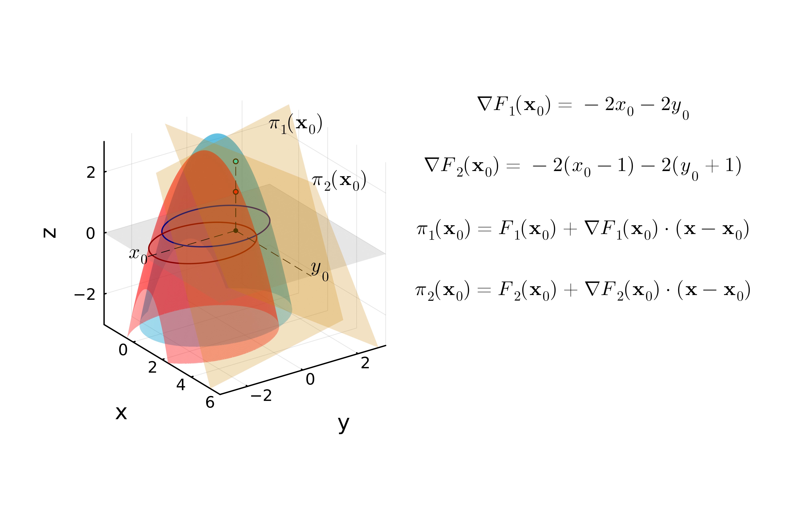
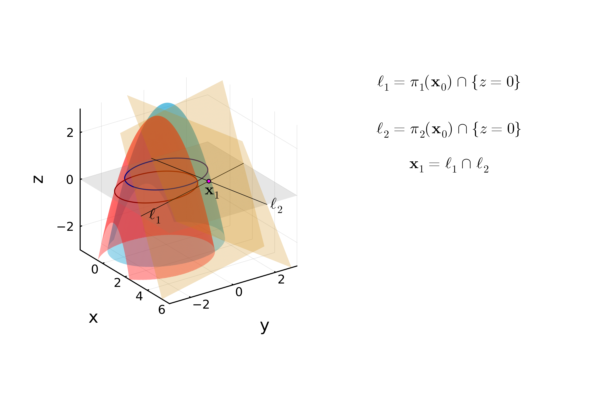
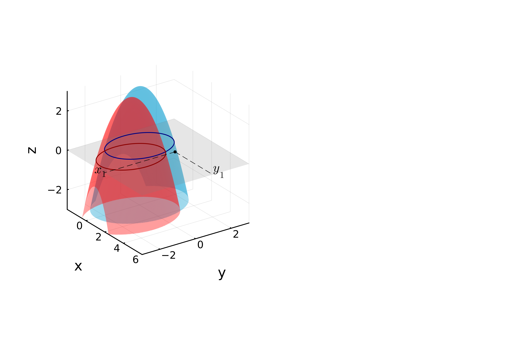
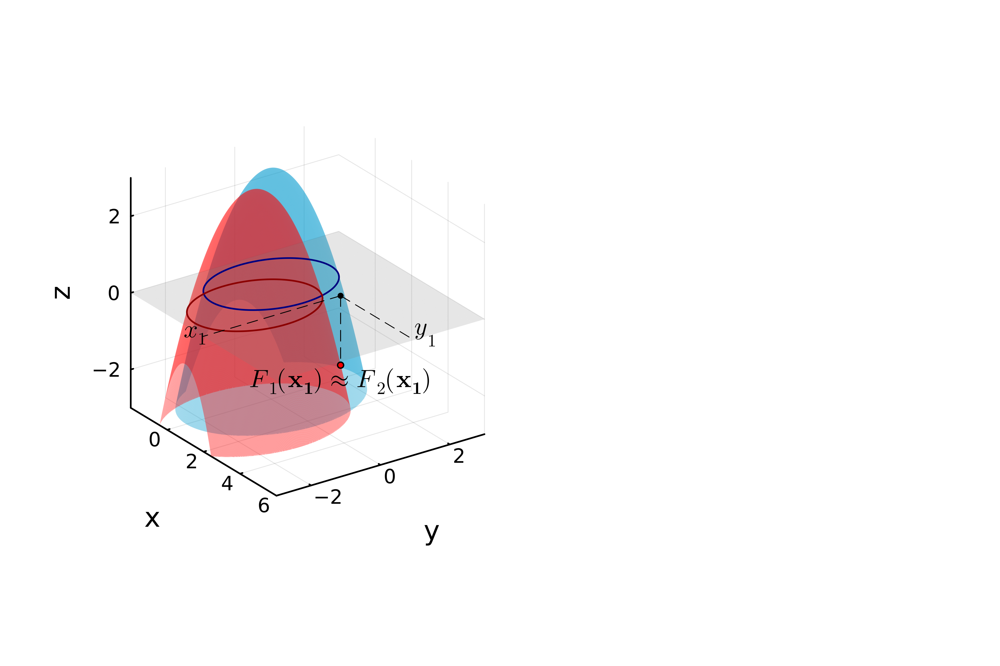
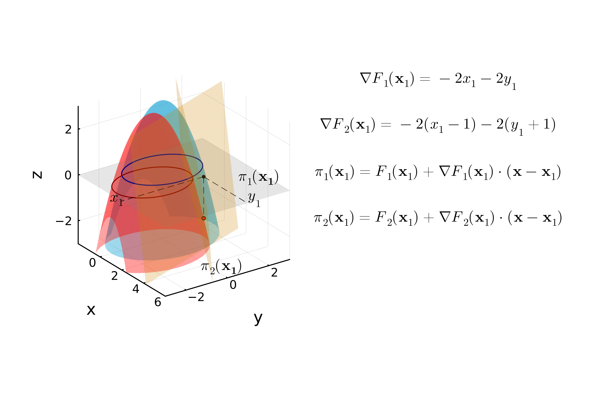
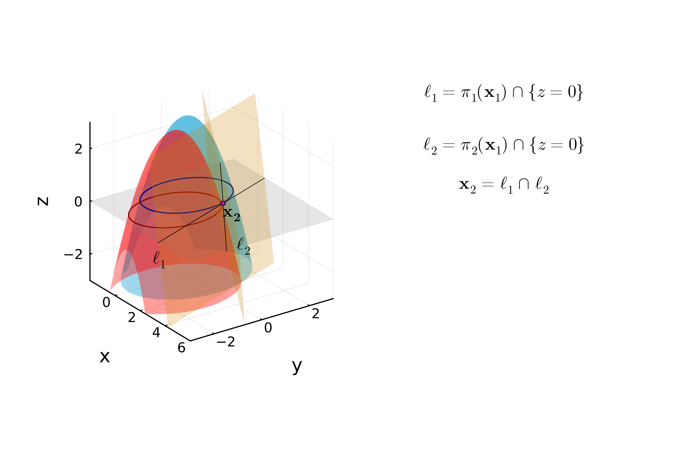

Chapter 1: Solving nonlinear equations
Digital resources and complementary exercises
1. Numerical problems
(i) Global temperature from Earth radiation balance
Application of the secant, Picard and Newthon methods
(ii) Anthropogenic effect on Earth's radiation balance
Brief description to be pasted here or write down the full exercise
2. Coding in Julia
A glimpse of the secant method
# Julia Code Snippet for Exercise I
function secant_method(f, x0, x1; tol=1e-8, max_iter=100)
# f: function, x0/x1: initial guesses
for _ in 1:max_iter
fx0, fx1 = f(x0), f(x1)
x2 = x1 - fx1 * (x1 - x0) / (fx1 - fx0)
if abs(x2 - x1) < tol
return x2
end
x0, x1 = x1, x2
end
error("Secant method did not converge")
end
Download the full code from GitHub
3. Illustrations of the methodologies
Visualizing 2D Newton's Method Iterations
The following sequence illustrates the convergence path of the 2D Newton's method towards the solution.

Iteration 1 (Initial Guess)

Iteration 2

Iteration 3

Iteration 4

Iteration 5

Iteration 6

Iteration 7

Iteration 8 (Final)